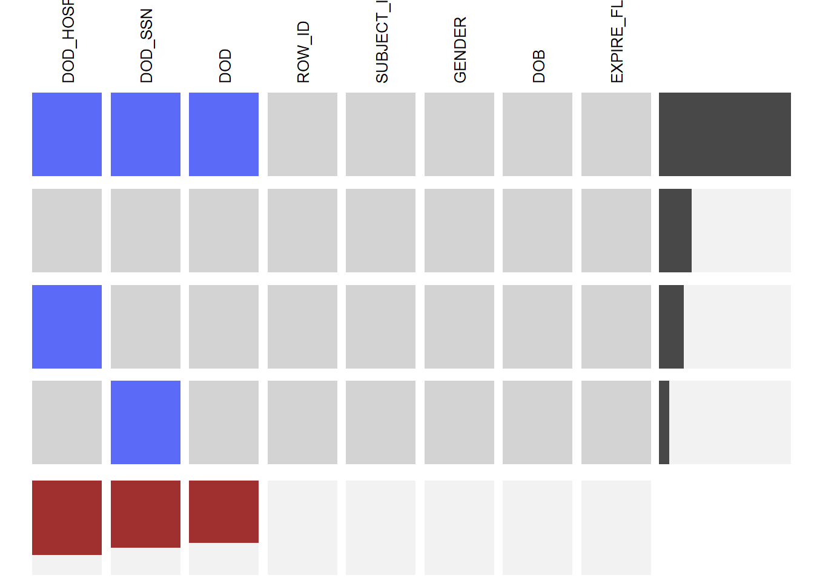
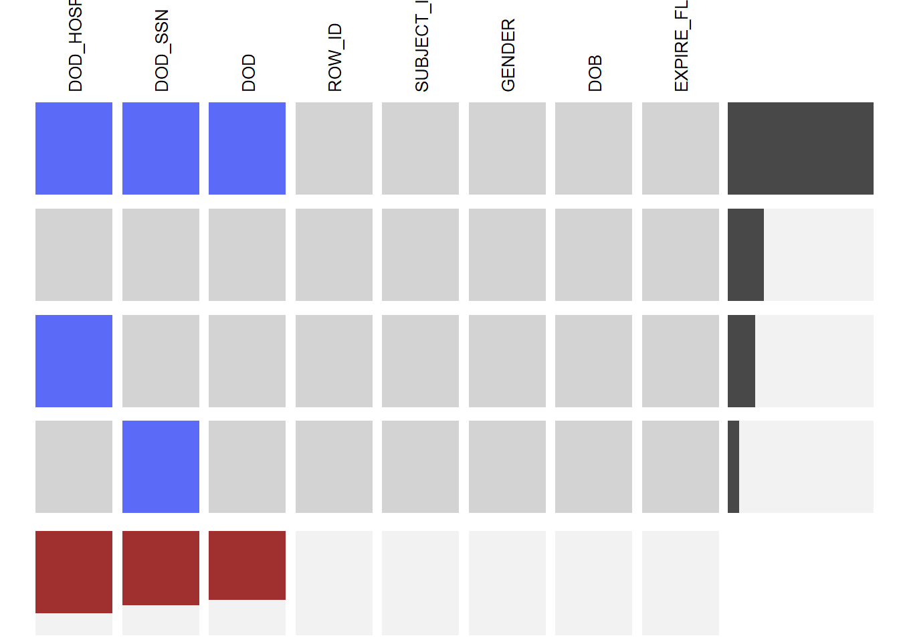
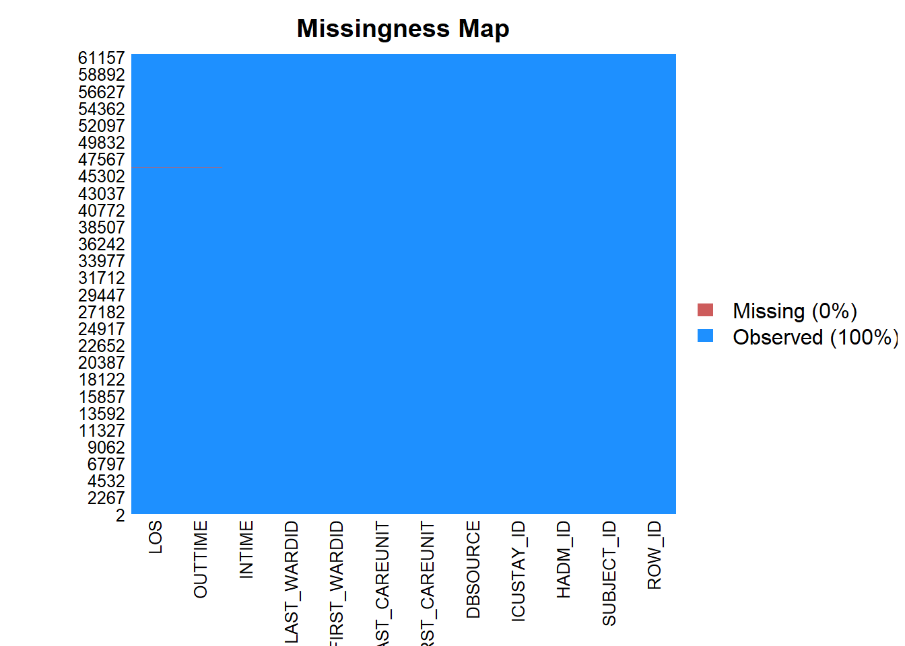
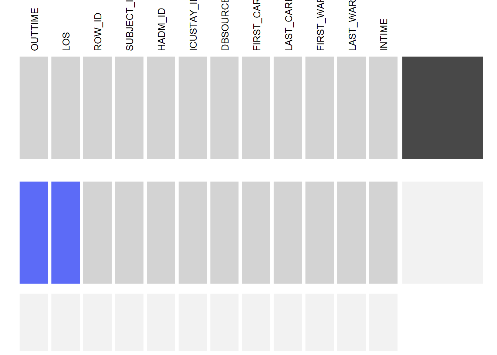
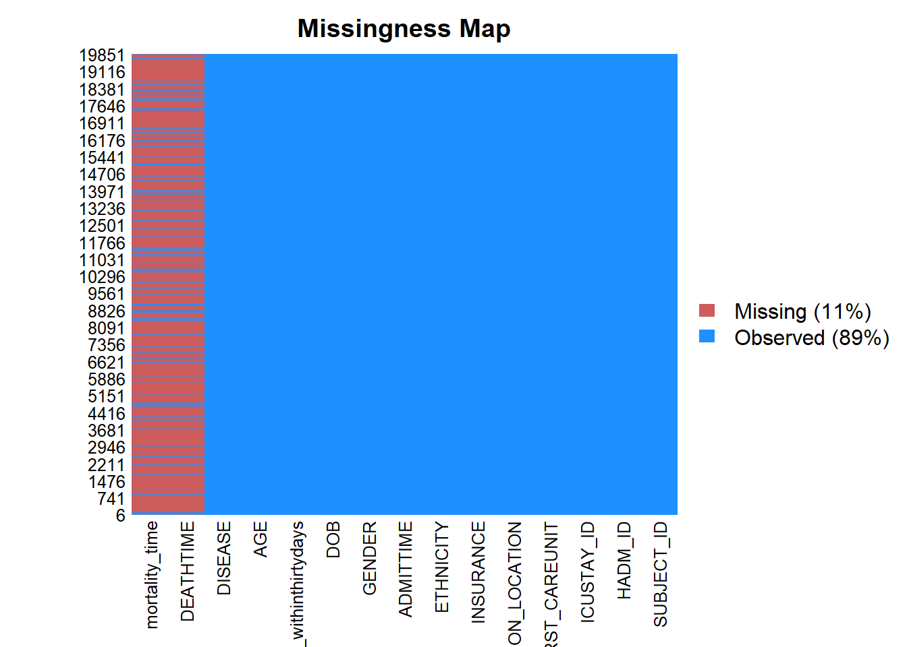

Chapter 4 Missing values
# These will install required packages if they are not already installed
if (!require("ggplot2")) {
install.packages("ggplot2")
library(ggplot2)
}
if (!require("dplyr")) {
install.packages("dplyr2")
library(dplyr)
}
if (!require("knitr")) {
install.packages("knitr")
library(knitr)
}
if (!require("xtable")) {
install.packages("xtable")
library(xtable)
}
if (!require("caret")) {
install.packages("caret")
library(caret)
}
if (!require("reshape2")){
install.packages("reshape2")
library(reshape2)
}
if (!require("gridExtra")){
install.packages("gridExtra")
library(gridExtra)
}
if (!require("MASS")){
install.packages("MASS")
library(MASS)
}
if (!require("reshape2")) {
install.packages("nnet")
library(lubridate)
}
if (!require("nnet")) {
install.packages("reshape2")
library(lubridate)
}
if (!require("tidyverse")) {
install.packages("tidyverse")
library(tidyverse)
}
if (!require("lubridate")) {
install.packages("lubridate")
library(lubridate)
}
if (!require("VIM")) {
install.packages("VIM")
library(lubridate)
}
if (!require("naniar")) {
install.packages("naniar")
library(lubridate)
}
if (!require("Amelia")) {
install.packages("Amelia")
library(lubridate)
}
if (!require("extracat")) {
install.packages("extracat")
library(lubridate)
}
knitr::opts_chunk$set(echo = FALSE)## ROW_ID SUBJECT_ID HADM_ID
## 0 0 0
## ADMITTIME DISCHTIME DEATHTIME
## 0 0 53122
## ADMISSION_TYPE ADMISSION_LOCATION DISCHARGE_LOCATION
## 0 0 0
## INSURANCE LANGUAGE RELIGION
## 0 25332 458
## MARITAL_STATUS ETHNICITY EDREGTIME
## 10128 0 28099
## EDOUTTIME DIAGNOSIS HOSPITAL_EXPIRE_FLAG
## 28099 25 0
## HAS_CHARTEVENTS_DATA
## 0 
EDREGTIME, EDOUTTIME are time that the patient was registered and discharged from the emergency department. Basically, we are not interested in these columns, so they don’t have influence on our project.

EDREGTIME, EDOUTTIME are time that the patient was registered and discharged from the emergency department. Basically, we are not interested in these columns, so they don’t have influence on our project.
## ROW_ID SUBJECT_ID GENDER DOB DOD DOD_HOSP
## 0 0 0 0 30761 36546
## DOD_SSN EXPIRE_FLAG
## 33142 0 DOD is the date of death for the given patient. DOD_HOSP is the date of death as recorded in the hospital database. DOD_SSN is the date of death from the social security database. Is a patient do not die, then we don’t have data in these columns.
## ROW_ID SUBJECT_ID HADM_ID ICUSTAY_ID DBSOURCE
## 0 0 0 0 0
## FIRST_CAREUNIT LAST_CAREUNIT FIRST_WARDID LAST_WARDID INTIME
## 0 0 0 0 0
## OUTTIME LOS
## 10 10
## ROW_ID SUBJECT_ID HADM_ID SEQ_NUM ICD9_CODE
## 0 0 0 47 47
## SUBJECT_ID HADM_ID
## 0 0
## ICUSTAY_ID FIRST_CAREUNIT
## 0 0
## ADMISSION_LOCATION INSURANCE
## 0 0
## ETHNICITY ADMITTIME
## 0 0
## DEATHTIME GENDER
## 16997 0
## DOB mortality_time
## 0 16997
## mortality_withinthirtydays AGE
## 0 0
## DISEASE
## 0
 We can see that all the missing data are in DEATHTIME and mortality_time. This is because not all the patients die and those who are alive don’t have DEATHTIME and mortality_time.
We can see that all the missing data are in DEATHTIME and mortality_time. This is because not all the patients die and those who are alive don’t have DEATHTIME and mortality_time.